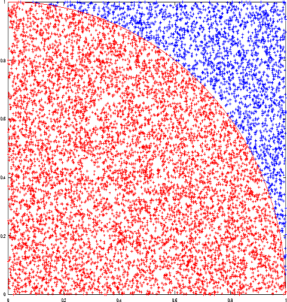

Among all possible approaches to calculate π I really like one that uses the montecarlo computational approach which basically exploits randomness to solve something that could be deterministic.
In the case of π it's extremely simple:
We calculate a lot of random numbers ∈ [0, 1] so to collect a lot/2 of points in the unary square in
ℜ2+,
some of those points will lie within the unary circle quarter and some will not.
It`s clear at that point that:
The more Points we get and the better is the distribution of the pseudo-random function we use, the better will be the value that we get for π.
In this example the first client that press the button will ask all other clients to calculate 107 points and concur to the calculation. The results are stored in the server and all incoming clients will see the most recent result.